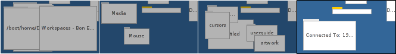

Español
Español Català
Català Deutsch
Deutsch English
English Français
Français Italiano
Italiano Magyar
Magyar Polski
Polski Português
Português Português (Brazil)
Português (Brazil) Română
Română Slovenčina
Slovenčina Suomi
Suomi Svenska
Svenska 中文 ［中文］
中文 ［中文］ Русский
Русский Українська
Українська 日本語
日本語Espacios de trabajo
Los espacios de trabajo son escritorios virtuales completos, con su propia resolución, profundidad de color y fondo de pantalla. Hasta 32 de estos espacios de trabajo se pueden configurar desde las preferencias de pantalla.

 Cambiar entre espacios de trabajo
Cambiar entre espacios de trabajo
Puede cambiar de espacios de trabajo, bien haciendo clic en el applet de espacios de trabajo (el cual se ve en la imagen de ariba), o utilizando el atajo de teclado ALT Fx, donde "x" es el número del espacio de trabajo. Es buena idea organizar los espacios de trabajo en filas de cuatro, para imitar la distribución de las teclas Fx en el teclado.
También, dar click en la aplicación o en una de sus ventanas en el Deskbar, le enviará al espacio de trabajo en el que está.
Otra forma cómoda de hacerlo es utilizar CTRL ALT ←/→/↑/↓ para moverse espacialmente entre las filas y columnas de los espacios de trabajo disponibles. Si adicionalmente se presiona MAYÚSCULAS, la ventana activa se moverá con usted hacia el nuevo espacio de trabajo.
Puede alternar entre dos espacios de trabajo con ALT ~ (que, dependiendo del mapa de teclado que esté usando, es la tecla debajo de ESC, que tendrá que pulsar dos veces para obtener ~).